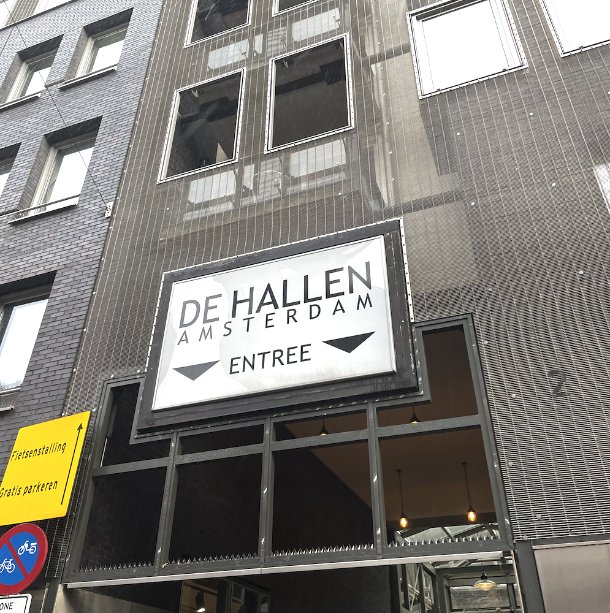
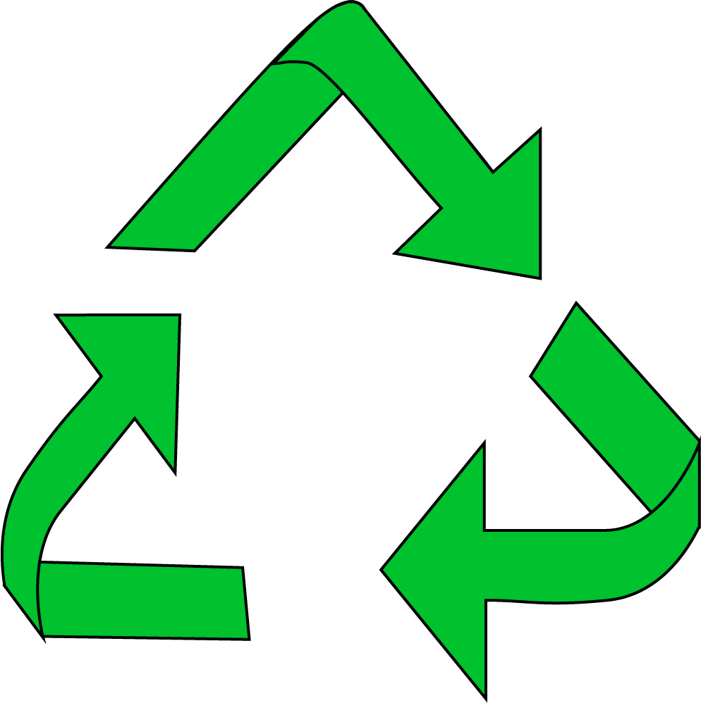

Over ons
Re_cycle
Re_cycle is dus een initiatief dat zich focust op duurzaam recycling van fietsen. Denk aan de verkoop van gerestaureerde old-timers, en ‘normale’ fietsen. Re_cycle doet ook meer dan alleen verkoop van fietsen. Zo restaureren en repareren ze ook fietsen. En dan denk je, ‘Dat doet toch elke fietsenmaker?’ Dat klopt. Maar wat Re_cycle zo bijzonder maakt is dat de winkel mensen die een psychische kwetsbaarheid hebben, een kans bieden om weer de arbeidsmarkt op te komen. Onder begeleiding van gepassioneerde technische vakmensen staan zij jouw fiets te repareren. Re_cycle bied nieuwe kansen voor zowel fietsen, als mensen!
Producten
Heb jij wel eens een sleutelhanger gezien van een fietsketting? Of zelfs sieraden van oude fietsonderdelen? Re_cycle maakt het mogelijk! Zij maken van oude fietsonderdelen de vetste producten. Als je de winkel inloopt, zie je gelijk al verschillende producten liggen waarvan je niet verwacht dat ze gemaakt zijn van een oude fiets. Een bureaulamp is iets wat je altijd wel zal nodig hebben, en wat je normaal kan halen in een winkel. Maar waarom niet een bureaulamp die is gemaakt van een fiets? Dat is toch te gek! Bekijk het hele assortiment ->
feit
Wist je dat Re_cycle zich bevindt in de hallen? In de kinkerstraat, in Amsterdam-West!
feit
Wist je dat in Nederland, minstens 1 miljoen fietsen op de afvalberg belanden? Wees slim en recycle!